In the 370-base partial RdRp sequence of 4991/RaTG13 which was published in 2016, there's 5 nucleotide changes and 1 amino acid change from Wuhan-Hu-1. So it has about 98.6% nucleotide identity with Wuhan-Hu-1 even though the whole genome of RaTG13 only has 96.1% identity, so people like Monali Rahalkar have been speculating that the rest of the genome of RaTG13 was fabricated to make it appear to be more distant to SARS2: [https://twitter.com/MonaRahalkar/status/1677549206150496256]
WIV had deposited RdRp and ORF8 submission of 4991 in 2018 and so when they sequenced sars2 they should have found 4991 RdRp of almost 3000 bases with 98 percent and protein match should be 99 or more. What’s the guarantee that the rest was not that close too! Did they distance it
Was this the reason Shi lost her sleep that 4991 RdRp was 98 percent and on aa much more closer to sars2. So little tampering of this sequence into a synthetic or serial passage could result in a lab made sars2, and people would suspect them?
When the RaTG13 sequence came out on 27 Jan 2020, it was about 96.2 percent similar. Did they adjust it at other places so that the average came low? It’s like 98, 99 percent marks in many subjects and S protein 93 lowering the average marks to 96.2%?
However in the paper by Ge et al. from 2016 where the RdRp fragment was published, it was specifically called the "conserved 440-bp RdRp fragment": "Only two sequences detected in this study were homologous to betacoronaviruses. One of them (RaBtCoV/4991) was detected in a R. affinis sample and was related to SL-CoV. The conserved 440-bp RdRp fragment of RaBt-CoV/4991 had 89% nt identity and 95% aa identity with SL-CoV Rs672 (Yuan et al., 2010)." [https://link.springer.com/content/pdf/10.1007/s12250-016-3713-9.pdf] In the paper they also sequenced the same region from alphacoronaviruses, and it is one of the regions that is the most similar between alphacoronaviruses and betacoronaviruses.
The same region was also sequenced in the "discovery of a rich gene pool" paper by Hu et al. from 2016: "A total of 602 alimentary specimens (anal swabs or feces) were collected and tested for the presence of CoVs by a Pan-CoV RT-PCR targeting the 440-nt RdRp fragment that is conserved among all known α- and β-CoVs [20]." [https://journals.plos.org/plospathogens/article?id=10.1371/journal.ppat.1006698]
In the region of the RdRp fragment of RaTG13, for example Tor2 has only 3 nucleotide changes from WIV1 and SHC014, even though it has about 93-95% identity to them in the whole genome (but here the identity is a bit higher because I ignored positions where either sequence had a gap and I did a big multiple sequence alignment). Here the first column shows the number of nucleotide changes in the region of the partial RdRp sequence of 4991, and the second column shows the identity percentage in the whole genome:
$ curl -sL sars2.net/f/sarbe.fa.xz|gzip -dc>sarbe.fa;seqkit seq -g sarbe.fa>sarbe.ungap
$ wget sars2.net/f/sarbe.pid
$ bow()([[ -e $1.1.bt2 ]]||bowtie2-build --threads 3 "$1" "$1";bowtie2 --no-unal -p3 -x "$@")
$ curl 'https://eutils.ncbi.nlm.nih.gov/entrez/eutils/efetch.fcgi?db=nuccore&rettype=fasta&id=KP876546'>4991.fa
$ bow sarbe.ungap -fU 4991.fa -a --score-min L,-1.5,-1.5|grep -v ^@|ruby -ane'puts [$F[2],$F[3],$F[3].to_i+$F[5].scan(/\d+(?=[MD])/).map(&:to_i).sum-1]*" "'|while read l m n;do seqkit grep -p $l sarbe.ungap|seqkit subseq -r $m:$n;done|seqkit grep -nrvp 'SARS coronavirus ZJ01'|mafft --quiet --thread 4 ->temp
$ x=Tor2;cat <(seqkit grep -nrp $x temp) temp|sed 's/\(,\| surface\).*//'|seqkit fx2tab|awk -F\\t 'NR==1{split($2,a,"");next}{split($2,b,"");d=0;for(i=1;i<=length;i++)if(a[i]!=b[i])d++;print d,$1}'|sort -n|awk 'NR==FNR{a[$2]=$1;next}{$1=$1"\t"a[$2]}1' <(awk -F\\t 'NR==1{for(i=2;i<=NF;i++)if($i~x)break;next}{print$i,$1}' x="$x" sarbe.pid) -|sed 's/ /\t/'|awk '$2==100||($2<98&&$0!~/SARS coronavirus/)'|head|column -ts$'\t'
0 100.0000 NC_004718.3 SARS coronavirus Tor2
1 93.5641 KP886808.1 Bat SARS-like coronavirus YNLF_31C
1 93.5506 KP886809.1 Bat SARS-like coronavirus YNLF_34C
2 92.0783 KU973692.1 UNVERIFIED: Severe acute respiratory syndrome-related coronavirus isolate F46
2 93.9236 KY417148.1 Bat SARS-like coronavirus isolate Rs4247
3 95.4596 KC881005.1 Bat SARS-like coronavirus RsSHC014
3 95.7228 KC881006.1 Bat SARS-like coronavirus Rs3367
3 95.6781 KF367457.1 Bat SARS-like coronavirus WIV1
3 95.8298 KY417144.1 Bat SARS-like coronavirus isolate Rs4084
3 93.8966 KY417149.1 Bat SARS-like coronavirus isolate Rs4255
RhGB05 and RhGB06 have only 1 nucleotide change in the region, but they have about 97% identity in the whole genome.
For example Anlong-112 also has 1-3 nucleotide changes in the same region with all the viruses in this simplot, even though the identity in the whole genome is around 90-96%:
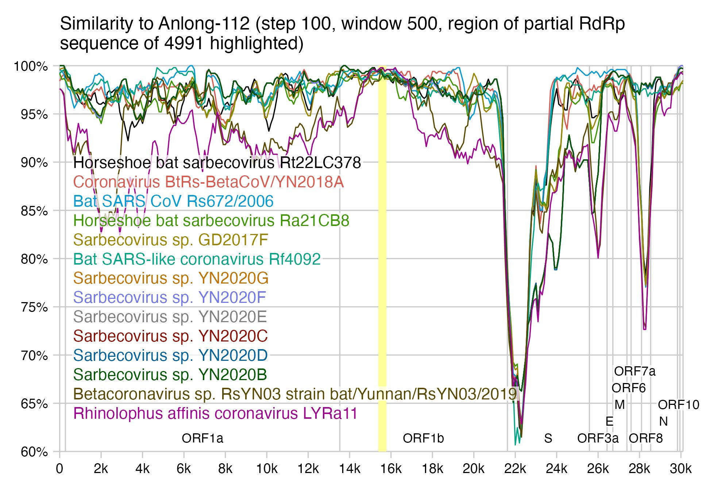
Rahalkar also posted a screenshot of a SARS2 sample from 2024 at BLAST which had only 3 nucleotide changes from the 370-base RdRp fragment of 4991, and she wrote: "So now the virus is mutating back to the ancestor! Because the three base diff is a recent most sequence." [https://twitter.com/MonaRahalkar/status/1787859480459235726] However BLAST has millions of SARS2 samples, so just because one sample from 2024 has only 3 mutations doesn't mean it would be typical of all samples from 2024. NextStrain's global subset of SARS2 samples included 450 samples from 2024, but only one of the samples had 4 mutations in the 370-base region, 390 samples had 5 mutations, 56 had 6, and 3 had 7. So the average was higher than 5:
$ curl 'https://eutils.ncbi.nlm.nih.gov/entrez/eutils/efetch.fcgi?db=nuccore&rettype=fasta&id=KP876546'>4991.fa
$ curl https://data.nextstrain.org/files/ncov/open/global/aligned.fasta.xz|gzip -dc>global.fa
$ seqkit locate -f4991.fa -m8 <(seqkit head -n1 global.fa)|sed 1d|cut -f5,6|seqkit subseq -r $(tr \\t :) global.fa|seqkit grep -nrp '2024$'|seqkit grep -svp N|cat 4991.fa -|seqkit seq -s|awk 'NR==1{split($0,a,"");l=length;next}{split($0,b,"");d=0;for(i=1;i<=l;i++)if(a[i]!=b[i])d++;n[d]++}END{for(i in n)print i,n[i]}'
4 1
5 390
6 56
7 3
Limeng Yan was making a big deal out of how the envelope protein of ZC45 had 100% amino acid identity to SARS2: [https://zenodo.org/records/4028830]
The E protein is tolerant of mutations as evidenced in both SARS (Figure 2A) and related bat coronaviruses (Figure 2B). This tolerance to amino acid mutations of the E protein is further evidenced in the current SARS-CoV-2 pandemic. After only a short two-month spread of the virus since its outbreak in humans, the E proteins in SARS-CoV-2 have already undergone mutational changes. Sequence data obtained during the month of April reveals that mutations have occurred at four different locations in different strains (Figure 2C). Consistent with this finding, sequence blast analysis indicates that, with the exception of SARS-CoV-2, no known coronaviruses share 100% amino acid sequence identity on the E protein with ZC45/ZXC21 (suspicious coronaviruses published after the start of the current pandemic are excluded[18,27-31]), Although 100% identity on the E protein has been observed between SARS-CoV and certain SARS-related bat coronaviruses, none of those pairs simultaneously share over 83% identity on the Orf8 protein[32]. Therefore, the 94.2% identity on the Orf8 protein, 100% identity on the E protein, and the overall genomic/amino acid-level resemblance between SARS-CoV-2 and ZC45/ZXC21 are highly unusual. Such evidence, when considered together, is consistent with a hypothesis that the SARS-CoV-2 genome has an origin based on the use of ZC45/ZXC21 as a backbone and/or template for genetic gain-of-function modifications.
But if SARS1 has an identical envelope protein on the amino acid level with viruses where the ORF8 is less than 83% identical, then it suggests that there's nothing unusual if there's 100% aa identity for the envelope proteins of viruses that are not closely related.
The envelope protein of BtKY72 also has 100% amino acid identity to other African sarbecoviruses even though they only have about 85% nucleotide identity in the whole genome:
$ curl -sL sars2.net/f/sarbe.fa.xz|gzip -dc>sarbe.fa;wget sars2.net/f/sarbe.pid
$ emu()(curl -sd "id=$(paste -sd,)" "https://eutils.ncbi.nlm.nih.gov/entrez/eutils/efetch.fcgi?db=${1:-nuccore}&rettype=${2:-fasta}&retmode=$3")
$ seqkit seq -ni sarbe.fa|emu '' fasta_cds_aa|seqkit grep -nrp 'gene=E\b|envelope|protein=E\b'>env.aa
$ sed 's/lcl|//;s/_prot.*//' env.aa|seqkit fx2tab|awk -F\\t 'NR==FNR{a[$1]=$2;next}{print">"$1" "a[$1]"\n"$2}' <(seqkit seq -n sarbe.fa|sed $'s/ /\t/;s/\(,\| surface\| ORF1\).*//') ->env2.aa
$ masog()(awk -F\\t 'NR==1{for(i=2;i<=NF;i++)if($i~x)break;next}{print$i,$1}' x="$1" "${2--}"|sort -n)
$ pid0()(seqkit fx2tab "$@"|awk -F\\t 'NR==1{split($2,a,"");l=length;next}{split($2,b,"");d=0;n=0;for(i=1;i<=l;i++){n++;if(a[i]!=b[i])d++}print 100*(1-d/n),$1}')
$ x=BtKY72;seqkit grep -nrp $x env2.aa|cat - env2.aa|pid0|sort -rn|awk 'NR==FNR{a[$2]=$1;next}{$1=$1" "a[$2]}1' <(masog $x sarbe.pid) -|head
100 85.3537 MT726045.1 Sarbecovirus sp. isolate PREDICT/PRD-0038/AABSMF
100 85.4618 MT726044.1 Bat coronavirus isolate PREDICT/PDF-2370/OTBA35RSV
100 85.4618 MT726043.1 Sarbecovirus sp. isolate PREDICT/PDF-2386/OTBA40RSV
100 100.0000 KY352407.1 Severe acute respiratory syndrome-related coronavirus strain BtKY72
99.359 81.7080 MZ190137.1 Bat SARS-like coronavirus Khosta-1 strain BtCoV/Khosta-1/Rh/Russia/2020
97.4359 78.1437 OR233314.1 Horseshoe bat sarbecovirus isolate Rt22SL92
97.4359 78.1471 OR233313.1 Horseshoe bat sarbecovirus isolate Rt22SL85
97.4359 78.1471 OR233312.1 Horseshoe bat sarbecovirus isolate Rt22SL58
97.4359 78.1437 OR233311.1 Horseshoe bat sarbecovirus isolate Rt22SL130
97.4359 78.0657 OR233303.1 Horseshoe bat sarbecovirus isolate Rt22SL9
Tor2 and HKU3 also have an identical envelope protein on the amino acid level even though they only have about 88% nucleotide identity in the whole genome (in a multiple sequence alignment where positions where either sequence has a gap are ignored):
$ x=Tor2;seqkit grep -nrp $x env2.aa|cat - env2.aa|pid0|sort -rn|awk 'NR==FNR{a[$2]=$1;next}{$1=$1" "a[$2]}1' <(masog $x sarbe.pid) -|awk '$1==100'|sort -nk2|head
100 82.2274 OR233309.1 Horseshoe bat sarbecovirus isolate Rt22SL67
100 88.0533 DQ084199.1 bat SARS coronavirus HKU3-2
100 88.0562 DQ084200.1 bat SARS coronavirus HKU3-3
100 88.0597 DQ022305.2 Bat SARS coronavirus HKU3-1
100 88.1371 OK017837.1 Sarbecovirus sp. isolate JX2021C
100 88.2051 OK017801.1 Sarbecovirus sp. isolate HB2020D
100 88.2333 OK017845.1 Sarbecovirus sp. isolate JX2021P
100 88.2441 OK017808.1 Sarbecovirus sp. isolate FJ2021A
100 88.3719 OK017844.1 Sarbecovirus sp. isolate JX2021O
100 88.3878 OQ503499.1 Severe acute respiratory syndrome-related coronavirus isolate RsHB190371
The paper by DRASTIC titled "Unexpected novel Merbecovirus discoveries in agricultural sequencing datasets from Wuhan, China" said: [https://europepmc.org/article/PPR/PPR353109]
A significant amount of reads of a SARS-r CoV most closely related to HKU3 was identified in a Mus Musculus splenocyte RNA-seq sequencing dataset SRR5819071 in BioProject PRJNA393936. The novel bat SARS-like HKU3-related CoV was identified via BLAST analysis of the dataset, with the reads only 96-98% similar to their closest related GenBank sequences (Supp. Fig. 27, Supp. Table 4). Although the sequences are far too few to be assembled, the presence of transcription regulatory sequence (TRS)-leader associated fusion reads between the TRS-leader and the TRS-N gene suggest active replication of the HKU3-r CoV within the Mus Musculus splenocyte sample.
Even though most of the other runs discussed in the paper were submitted by Huazhong Agricultural University or Fujian Agriculture and Forestry University, the SRR5819071 run which contained the HKU3-like virus was submitted by WIV.
When I aligned the reads in the run against sarbecovirus sequences, I got the highest number of covered bases for the isolates 141376 and 141341 which were published in 2023, and the average error rates for them were only about 0.40% and 0.08%:
$ curl -sL sars2.net/f/sarbe.fa.xz|gzip -dc>sarbe.fa
$ seqkit seq -g sarbe.fa|seqkit fx2tab|sed $'s/A*\t$//'|seqkit tab2fx|bbmask.sh window=20 in=stdin out=sarbe.mask
$ bowtie2-build --threads 3 sarbe.fa{,}
$ x=SRR5819071;bowtie2 -p 3 --no-unal -x sarbe.mask -1 ${x}_1.fastq.gz -2 ${x}_2.fastq.gz --score-min L,-1,-1|samtools sort -@3 ->$x.sarbe.bam
$ covera()(samtools coverage "$1"|awk \$4|cut -f1,3-6|(gsed -u '1s/$/\terr%\tname/;q';sort -rnk5|awk -F\\t -v OFS=\\t 'NR==FNR{a[$1]=$2;next}{print$0,sprintf("%.2f",a[$1])}' <(samtools view $x|awk -F\\t '{x=$3;n[x]++;len[x]+=length($10);sub(/.*NM:i:/,"");mis[x]+=$1}END{for(i in n)print i"\t"100*mis[i]/len[i]}') -|awk -F\\t 'NR==FNR{a[$1]=$2;next}{print$0"\t"a[$1]}' <(seqkit seq -n "${2-~/viral.fa}"|gsed 's/ /\t/;s/,.*//') -)|column -ts$'\t')
$ covera $x.sarbe.bam sarbe.mask
#rname endpos numreads covbases coverage err% name
OQ503496.1 29646 10 1355 4.5706 0.40 Severe acute respiratory syndrome-related coronavirus isolate 141376
OQ503495.1 29657 8 837 2.82227 0.08 Severe acute respiratory syndrome-related coronavirus isolate 141341
OQ297705.1 30029 846586 350 1.16554 6.01 MAG: Severe acute respiratory syndrome-related coronavirus isolate CQ/L80.18/2021
OP776339.1 30600 3 234 0.764706 15.93 Sarbecovirus sp. isolate RhGB05
OQ297732.1 29568 2 200 0.676407 1.33 MAG: Severe acute respiratory syndrome-related coronavirus isolate GD/L105.18/2022
OK017815.1 29550 2 193 0.65313 0.33 Sarbecovirus sp. isolate GD2017I
KF294457.1 29676 2 182 0.61329 0.00 Bat SARS-like coronavirus isolate Longquan-140 orf1ab polyprotein
OL674076.1 29780 116980 159 0.533915 20.76 Severe acute respiratory syndrome-related coronavirus isolate Rs7907
OK017841.1 29350 1 150 0.511073 0.67 Sarbecovirus sp. isolate JX2021L
OQ503500.1 30385 146 151 0.496956 21.70 Severe acute respiratory syndrome-related coronavirus isolate 4105
OQ503498.1 30172 2 137 0.454063 16.33 Severe acute respiratory syndrome-related coronavirus isolate BDA190366
KY417144.1 29770 2 132 0.443399 0.00 Bat SARS-like coronavirus isolate Rs4084
OK017842.1 29337 2 120 0.40904 0.00 Sarbecovirus sp. isolate JX2021M
OQ503504.1 30325 11539 118 0.389118 22.24 Severe acute respiratory syndrome-related coronavirus isolate 162173
When I ran MEGAHIT on the reads which aligned against sarbecoviruses, my longest contig was 535 bases long and it was 100% identical to both 141376 and 141341:
x=SRR5819071;samtools view $x.sarbe.bam|grep -Ev 'OQ297705|OL674076|OQ503504'|cut -f1,10|seqkit tab2fx>temp.fa megahit -r temp.fa --min-count 1 -o megatemp;seqkit sort -lr megatemp/final.contigs.fa
The 141376 and 141341 isolates actually have over 5% nucleotide distance from HKU3:
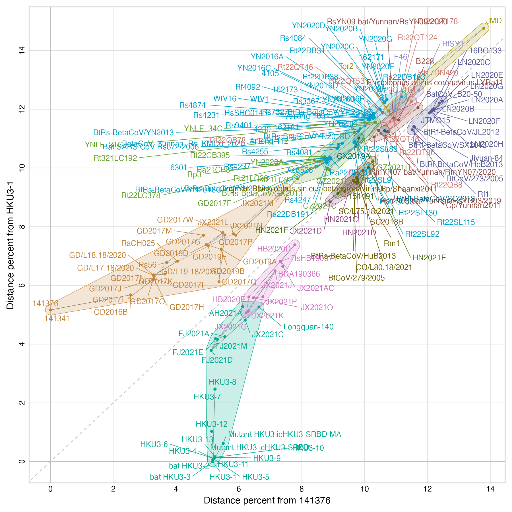
The 141376 and 141341 isolates were published in a paper by WIV titled "Isolation of ACE2-dependent and -independent sarbecoviruses from Chinese horseshoe bats", where the corresponding authors were Zhengli Shi and Michael Letko. [https://www.ncbi.nlm.nih.gov/pmc/articles/PMC10537568/] In the paper the isolates were given the identifiers RsGD2014A and RsGD2014B. Supplementary Table 1 says that RsGD2014A and RsGD2014B are identical (even though at GenBank 141376 has two nucleotide changes from 141341, but I guess they're still virtually identical):
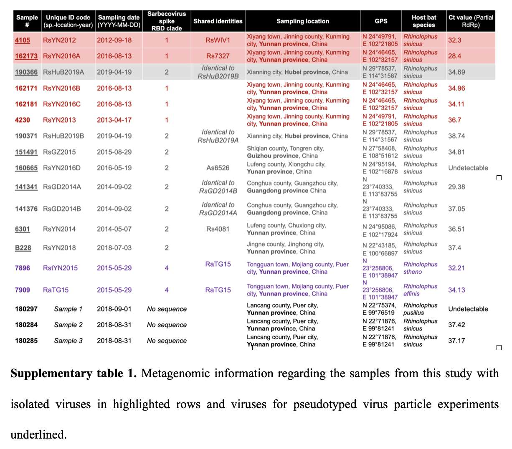
RsGD2014A seems to have some S1 recombination action going on, which is totally unexpected from a virus published by the WIV. The NTD is virtually identical to GD2017H and RaCH025:
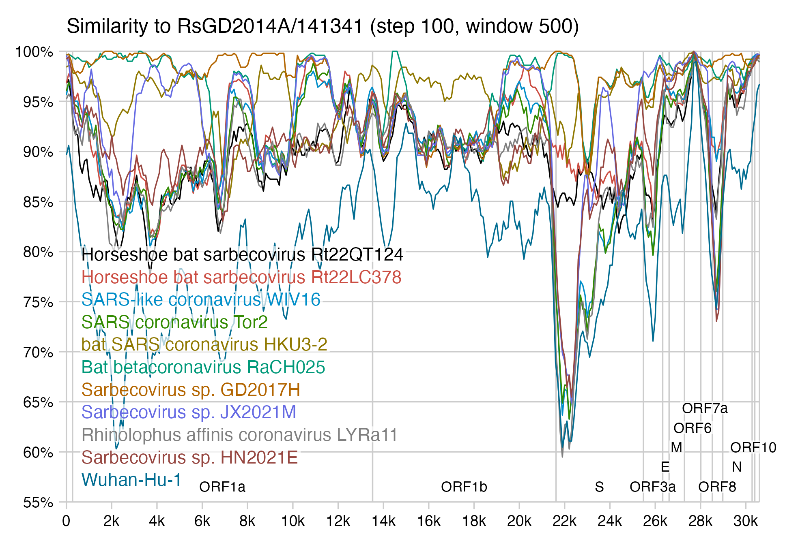
If RsGD2014A is compared to GD2017H, there are also breakpoints in the slope of cumulative synonymous mutations near the start and end of the RBD:
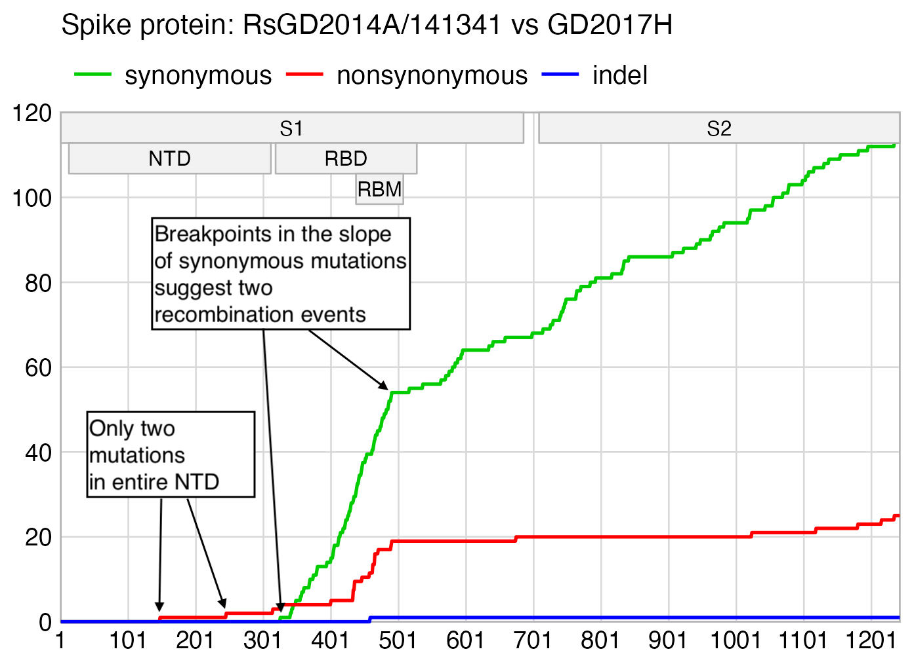
In 2021 Steven Quay et al. published a preprint which showed that in the raw reads of samples from early COVID patients published by WIV, there were also reads which contained the HA segment of influenza A within a pVAC1 expression vector: https://www.researchgate.net/publication/353117424_CONTAMINATION_OR_VACCINE_RESEARCH_RNA_Sequencing_data_of_early_COVID-19_patient_samples_show_abnormal_presence_of_vectorized_H7N9_hemagglutinin_segment. Influenza viruses are segmented viruses which contain a total of 8 segments, similar to how the human genome is divided into chromosomes. Segment 4 codes for the hemagglutin protein, which is the equivalent of the spike protein in coronaviruses.
The WIV reads also contained a much smaller number of reads for other segments of H7N9, even though Quay wrote: "Mr. Cullen fails to state that the H7N9 sequences found in the patients were one gene only, attached to a laboratory vector." [https://twitter.com/quay_dr/status/1762247581726581006] However later he corrected himself and wrote: "Correction: 5 of 6 did not have all of the influenza genes. 1 of 6 had all of the genes but non-HA genes at <2% of HA. HA is in a synthetic vector as in a vaccine." [https://twitter.com/quay_dr/status/1787117752089792778]
The run with the highest number of H7N9 reads has the ID WIV07-2. It has about 17,000 reads that match segment 4 but only about 150 reads which match other segments of H7N9.
The H7N9 reference sequence comes from a sample collected from a human patient in China in 2013, even though H7N9 samples from humans are otherwise fairly rare. When I aligned the reads of WIV07-2 against the refseq, I got an error rate of about 0.3% for reads that aligned against segment 4 (HA) and 0.3% for segment 8, but I got an error rate of 1.6-3.5% for the other segments (and there were only 4 reads which aligned against segment 8 so the low error rate may have been due to chance). So I thought that maybe the other segments come from a different source than segment 4:
brew install seqkit bowtie2 samtools gnu-sed
curl ftp://ftp.ncbi.nlm.nih.gov/entrez/entrezdirect/install-edirect.sh|sh
curl "https://www.ebi.ac.uk/ena/portal/api/filereport?accession=SRR11092059&result=read_run&fields=fastq_ftp"|sed 1d|cut -f1|tr \; \\n|sed s,^,ftp://,|xargs wget
esearch -db nuccore -query '(h7n9[organism] OR wuhan-hu-1) AND refseq[filter]'|efetch -format fasta|seqkit replace -isp 'a{5,}$'>h7n9sars2.fa
bowtie2-build h7n9sars2.fa{,}
bowtie2 -p4 --no-unal --local -x h7n9sars2.fa -1 SRR11092059_1.fastq.gz -2 SRR11092059_2.fastq.gz|samtools sort -@3 ->SRR11092059.local.bam
x=SRR11092059.local.bam;samtools coverage $x|awk \$4|cut -f1,3-6|(gsed -u '1s/$/\terr%\tname/;q';sort -rnk3|awk -F\\t -v OFS=\\t 'NR==FNR{a[$1]=$2;next}{print$0,sprintf("%.2f",a[$1])}' <(samtools view $x|awk -F\\t '{x=$3;n[x]++;len[x]+=length($10);sub(/.*NM:i:/,"");mis[x]+=$1}END{for(i in n)print i"\t"100*mis[i]/len[i]}') -|awk -F\\t 'NR==FNR{a[$1]=$2;next}{print$0"\t"a[$1]}' <(seqkit seq -n h7n9sars2.fa|gsed 's/ /\t/;s/,.*//') -)|column -ts$'\t'
#rname endpos numreads covbases coverage err% name NC_026425.1 1708 17346 1685 98.6534 0.31 Influenza A virus (A/Shanghai/02/2013(H7N9)) segment 4 hemagglutinin (HA) gene NC_045512.2 29870 5214 29843 99.9096 0.22 Severe acute respiratory syndrome coronavirus 2 isolate Wuhan-Hu-1 NC_026422.1 2280 107 2201 96.5351 3.29 Influenza A virus (A/Shanghai/02/2013(H7N9)) segment 1 polymerase PB2 (PB2) gene NC_026427.1 980 27 543 55.4082 2.57 Influenza A virus (A/Shanghai/02/2013(H7N9)) segment 7 matrix protein 2 (M2) and matrix protein 1 (M1) genes NC_026423.1 2297 10 671 29.212 3.47 Influenza A virus (A/Shanghai/02/2013(H7N9)) segment 2 polymerase PB1 (PB1) and PB1-F2 protein (PB1-F2) genes NC_026428.1 841 4 140 16.6468 0.33 Influenza A virus (A/Shanghai/02/2013(H7N9)) segment 8 nuclear export protein (NEP) and nonstructural protein 1 (NS1) genes NC_026426.1 1499 4 349 23.2822 2.00 Influenza A virus (A/Shanghai/02/2013(H7N9)) segment 5 nucleocapsid protein (NP) gene NC_026424.1 2176 2 207 9.51287 1.67 Influenza A virus (A/Shanghai/02/2013(H7N9)) segment 3 polymerase PA (PA) and PA-X protein (PA-X) genes
Next I tried aligning the WIV07-2 reads against all H7N9 sequences from the NCBI's influenza virus database: https://www.ncbi.nlm.nih.gov/genomes/FLU/Database/nph-select.cgi. The 5 samples with the highest number of aligned reads for segment 4 were all from the year 2013. Out of a total of 750 sequences for segment 4 in my FASTA file, I got the highest number of aligned reads for A/Shanghai/02/2013, which is the H7N9 refseq:
#rname endpos numreads covbases coverage err% name KF021597 1708 621 1685 98.6534 0.34 A/Shanghai/02/2013;4;China;2013;03;05;Human CY146908 1683 603 1674 99.4652 0.32 A/chicken/Guangdong/SD641/2013;4;China;2013;05;03;Avian KJ395948 1683 600 1594 94.7118 0.26 A/chicken/Guangdong/G2/2013;4;China;2013;05;05;Avian KP413700 1683 578 879 52.2282 0.26 A/chicken/Dongguan/4195/2013;4;China;2013;12;19;Avian KM879322 1683 325 1505 89.4236 0.28 A/chicken/Zhejiang/DTID-ZJU06/2013;4;China;2013;12;;Avian
However segment 1 got most aligned reads against samples from 2017 (top 5 samples shown):
#rname endpos numreads covbases coverage err% name MG575543 2280 50 1866 81.8421 1.69 A/chicken/Anhui/AH395/2017;1;China;2017;03;06;Avian KY621539 2341 8 279 11.918 1.08 A/Qingyuan/GIRD01/2017;1;China;2017;01;14;Human MF630106 2280 6 254 11.1404 1.00 A/chicken/Guangdong/SD027/2017;1;China;2017;01;18;Avian KY643838 2340 6 484 20.6838 1.33 A/Guangdong/SP440/2017;1;China;2017;01;04;Human MF630458 2280 4 248 10.8772 3.67 A/duck/Hunan/S40506/2015;1;China;2015;11;16;Avian
Segment 7 also seems to match newer samples from around the year 2017:
#rname endpos numreads covbases coverage err% name MW100646 1027 4 247 24.0506 1.50 A/chicken/Hunan/5.24_YYGK49P2-OC/2017;7;China;2017;05;24;Avian MZ803120 1000 2 227 22.7 0.00 A/mallard/South Korea/20X-20/2021;7;South Korea;2021;01;06;Avian MW265394 982 2 160 16.2933 1.00 A/chicken/Shanxi/SX0256/2019;7;China;2019;01;10;Avian MW109507 1027 2 125 12.1714 0.67 A/environment/Jiangxi/2.06_SRGFYF005-E/2017;7;China;2017;02;06;Environment MW109475 982 2 226 23.0143 1.00 A/environment/Jiangxi/1.11_NCDZT98F2-E/2017;7;China;2017;01;11;Environment
So it could be that the HA plasmid was designed based on the refseq strain from 2013, but the full virus came from a newer strain of H7N9.
Pradhan et al. did a pairwise alignment of the spike protein of SARS2 against SARS1, and they identified 4 regions where SARS2 had an insert relative to SARS1:
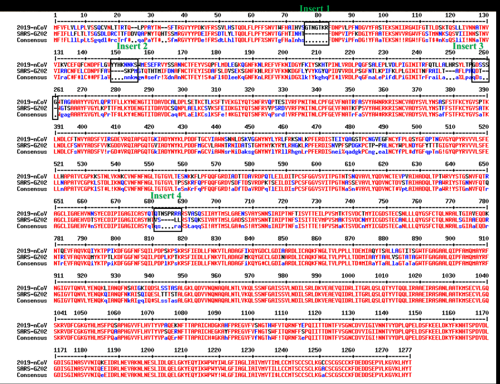
When Pradhan et al. did BLAST searches for the inserts and the surrounding amino acids, they found that for example the last 6 aa of the first 7-aa insert had a perfect match to an HIV sequence from Thailand, and the last 2 aa of the second insert along with the next 4 aa had a perfect match to an HIV sequence from Kenya:
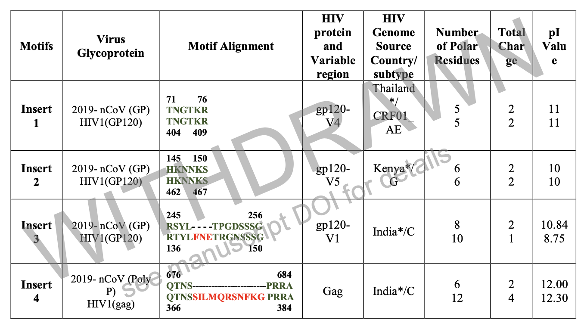
I tried searching for the first 7-aa insert in protein BLAST: https://blast.ncbi.nlm.nih.gov/Blast.cgi?PROGRAM=blastp&PAGE_TYPE=BlastSearch. I entered GTNGTKR to the text field at the top, I set the database to refseq_protein, I set the organism as "Viruses (taxid:10239)", and I clicked BLAST.
There were many different bacteriopages and a few non-phage viruses which matched 6 out of 7 aa so that one aa at either end was clipped by the local alignment, so that there was 100% identity but 85% query coverage:
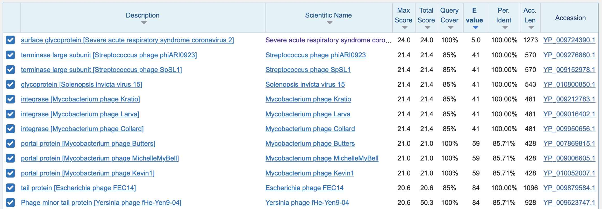
HIV-1 was not included in the results above, because I searched in a database which only contained refseq proteins. The standard reference genome of HIV-1 is called HXB2, and its envelope protein matches only 3 out of 7 aa of Pradhan's first insert:
$ curl 'https://eutils.ncbi.nlm.nih.gov/entrez/eutils/efetch.fcgi?db=nuccore&rettype=fasta_cds_aa&id=NC_001802'>hiv.aa $ seqkit locate -p GTNGTKR -m3 <(seqkit grep -nrp gene=env hiv.aa)|cut -f3,5-|column -t # no matches for max mismatch 3 pattern start end matched $ seqkit locate -p GTNGTKR -m4 <(seqkit grep -nrp gene=env hiv.aa)|cut -f3,5-|column -t # 7 matches for max mismatch 4 pattern start end matched GTNGTKR 232 238 TFNGTGP GTNGTKR 300 306 NNNTRKR GTNGTKR 321 327 GKIGNMR GTNGTKR 354 360 GNNKTII GTNGTKR 404 410 GSNNTEG GTNGTKR 495 501 GVAPTKA GTNGTKR 822 828 VAEGTDR
Next I tried doing another BLAST search for Pradhan's first insert, but I set the "Non-redundant protein sequences (nr)" database and I set the organism to HIV-1. There were 3 different spots of the envelope protein which all matched 6/7 aa of the insert so that one base at either end was cut off:
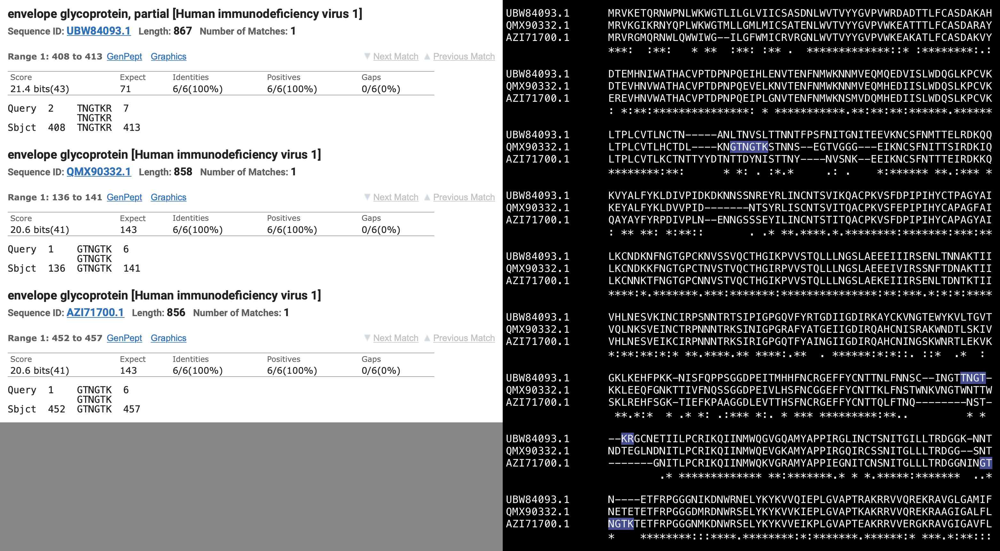
There's more than a million sequences of HIV-1 in GenBank: https://www.ncbi.nlm.nih.gov/nuccore/?term=%22Human+immunodeficiency+virus+1%22%5Bporgn%3A%5f%5ftxid11676%5D. I don't know how many of them are included at BLAST, but in any case it's not that unusual that a handful of sequences would randomly happen to match 6 out of 7 aa of Pradhan's first insert.
The env protein of HIV is divided into the gp120 and gp41 polyproteins, but Pradhan et al.'s first insert matched the gp120 part. I downloaded 125,046 gp120 sequences from the HIV sequence database of the Los Alamos National Laboratory: https://www.hiv.lanl.gov/components/sequence/HIV/search/search.html. None of them matched the full GTNGTKR insert, but there were 15 sequences that matched the first 6 aa and there were 12 sequences which matched the last 6 aa, and the matches were at 3 different spots:
$ seqkit stat HIV-1_env.fasta|column -t file format type num_seqs sum_len min_len avg_len max_len HIV-1_env.fasta FASTA Protein 125,046 105,184,828 479 841.2 1,469 $ seqkit locate -p GTNGTK HIV-1_env.fasta|cut -f1,5-7|column -t seqID start end matched C.IN.-.VB49.EF694035 135 140 GTNGTK C.ZA.2009.CAP177_39mo_30.KC833437 452 457 GTNGTK C.ZA.2009.CAP177_4260_186wpi_plasma_12.MK205618 452 457 GTNGTK C.ZA.2009.CAP177_4260_186wpi_cvl_73.MK205633 452 457 GTNGTK B.US.1990.1580m.11a.MT861903 136 141 GTNGTK B.US.1990.1580m.13s.MT861906 136 141 GTNGTK B.US.1990.1580m.15.MT861908 136 141 GTNGTK B.US.1990.1580m.16a.MT861910 136 141 GTNGTK B.US.1990.1580m.17.MT861911 136 141 GTNGTK B.US.1990.1580m.18.MT861913 136 141 GTNGTK B.US.1990.1580m.22.MT861919 136 141 GTNGTK B.US.1990.1580m.3a.MT861922 136 141 GTNGTK B.US.1990.1580m.5.MT861925 136 141 GTNGTK B.US.1990.1580m.7.MT861927 136 141 GTNGTK A1CD.TZ.2012.30196v23_env12.OM825465 460 465 GTNGTK $ seqkit locate -p TNGTKR ga/HIV-1_env.fasta|cut -f1,5-7|column -t seqID start end matched 01_AE.TH.2006.AA042a12R.JX447199 364 369 TNGTKR 01_AE.TH.2006.AA042a13R.JX447200 399 404 TNGTKR 01_AE.TH.2006.AA042a09R.JX447201 398 403 TNGTKR 01_AE.TH.2006.AA042a08R.JX447202 398 403 TNGTKR 01_AE.TH.2006.AA042a10R.JX447203 404 409 TNGTKR 01_AE.TH.2006.AA042a11R.JX447204 404 409 TNGTKR 01_AE.TH.2006.AA042a02R.JX447205 398 403 TNGTKR 01_AE.TH.2006.AA042a05R.JX447206 398 403 TNGTKR 01_AE.TH.2006.AA042a07R.JX447207 398 403 TNGTKR 01_AE.TH.2006.AA042a03R.JX447208 399 404 TNGTKR 01_AE.TH.2006.AA042a06R.JX447209 404 409 TNGTKR 01_AE.TH.2007.AA042d_ENV24.MZ347079 408 413 TNGTKR
So again it's not that unusual that 29 out of over a 100,000 sequences would happen to match 6 out of 7 aa. The reason why all four of Pradhan's inserts happened to match HIV and not some other virus might simply be that BLAST has a very large number of HIV sequences relative to other viruses.
Pradhan's second so-called insert matches the last 2 aa of the YYHK insert here and the next 4 aa:
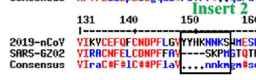
But there's a total of 7 possible 6 aa segments which include at least 2 aa of the 4 aa insert, so again it's not that surprising that one of them would happen to match one out of hundreds of thousands of published HIV genomes.
I also tried downloading protein sequences of influenza A from the NCBI's influenza virus database: https://www.ncbi.nlm.nih.gov/genomes/FLU/Database/nph-select.cgi#mainform. There were a bit over a million sequences:
$ seqkit stat influenzamega.fa file format type num_seqs sum_len min_len avg_len max_len influenzamega.fa FASTA Protein 1,234,340 497,828,616 1 403.3 775
The spike protein of Wuhan-Hu-1 is 1273 aa long so it has 1268 possible 6 aa subsegments. However 269 of them had an exact match to one or more of the protein sequences of influenza A:
$ curl 'https://eutils.ncbi.nlm.nih.gov/entrez/eutils/efetch.fcgi?db=nuccore&rettype=fasta_cds_aa&id=MN908947'|seqkit grep -nrp gene=S>sars2spike.aa
$ seqkit seq -s sars2spike.aa|awk '{for(i=1;i<length-5;i++)print substr($0,i,6)}'>kmer
$ grep -f kmer <(seqkit seq -s influenzamega.fa)>temp
$ for x in `<kmer`;do grep -m1 $l temp;done|wc -l
269
And in a FASTA file with 125,046 gp120 sequences of HIV, 53 out of 1268 6-mers had a perfect match (but the number would've been bigger if I was looking at all proteins of HIV):
$ grep -fkmer <(seqkit seq -s HIV-1_env.fasta)>temp2 $ for x in `<kmer`;do grep -m1 $x temp2;done|wc -l 53
Pradhan's first insert was GTNGTKR, but Wuhan-Hu-1 only has one or 2 inserted aa in that region relative to European and African sarbecoviruses, so it rather looks like SARS1 has deletions in that region. The TKR at the end of the first so-called insert is also matched by ZC45 and RpYN06:
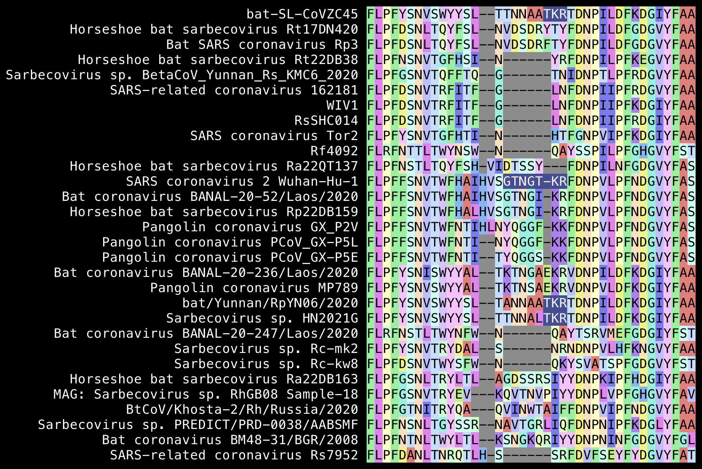
In Pradhan's pairwise alignment SARS2 had the insert YYHK relative to Tor2. Pradhan's second so-called insert was HKNNKS, which consisted of the last two aa of YYHK and the next 4 aa. However the YYHKNNK without the K in the middle is also included in ZC45 and ZXC21 (so it's weird that Pradhan didn't mention them since they were the closest published relatives of SARS2 in January 2020):
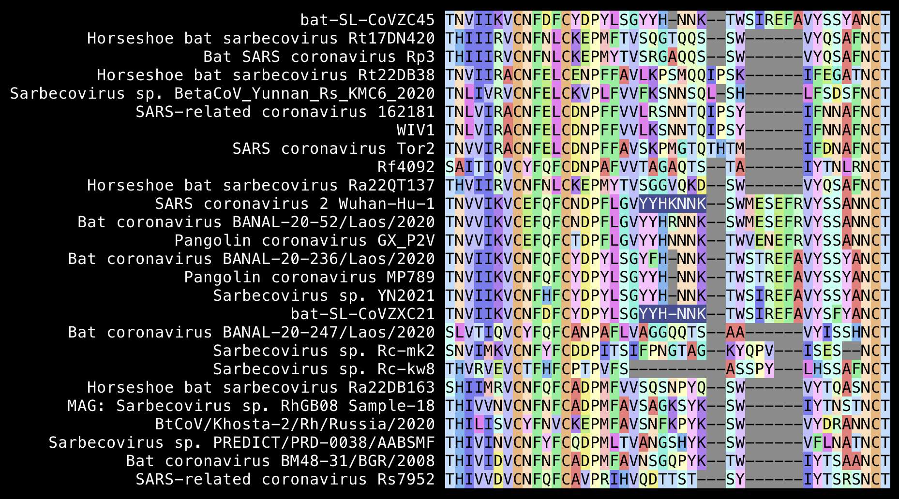
Also from my alignment above it looks that relative to SARS1, SARS2 has the deletion SK and the insertion MESEFR. Pradhan et al. should've included more different sequences in their alignment and not just SARS2 and SARS1. Trevor Bedford also pointed out that the YYHK wasn't really even an insert relative to other sarbecoviruses, but from his alignment it looks like SARS2 has the insertion SEFR: [https://twitter.com/trvrb/status/1223667730911354880]
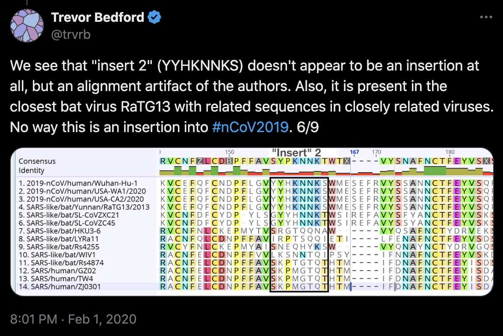
The third insert that was highlighted in Pradhan's alignment consisted of the amino acids SSG, even though a bit before it there was another 3 aa insert that was not highlighted. But the third insert might have been placed in the wrong spot because Pradhan et al. only did a pairwise alignment of SARS2 and SARS1. When I did an alignment of more viruses, I got a single 6 aa insert in SARS2 relative to SARS1 instead of two different 3 aa inserts. And my alignment also shows that the G at the end of SSG is also included in ZC45 and RpYN06 (and the middle S in SSG is even included in European and African sarbecoviruses, even though it might be a coincidence):
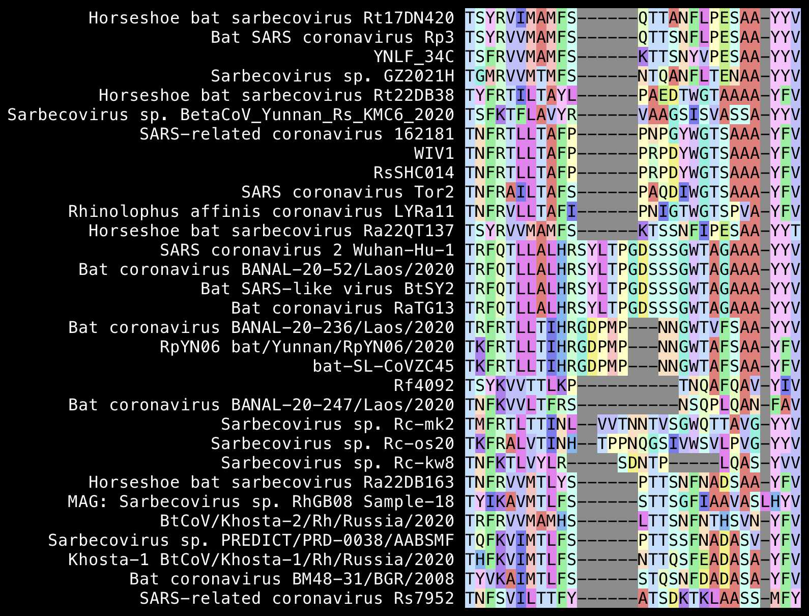
The insert between inserts 2 and 3 that wasn't highlighted by Pradhan consisted of the amino acids LHR. When I tried searching for the insert and the surrounding amino acids on BLAST, I found that the LHR and the next 4 amino acids were matched by a bacteriophage from the class Caudoviricetes (so it's even better than Pradhan's first two inserts which only matched 6 amino acids):
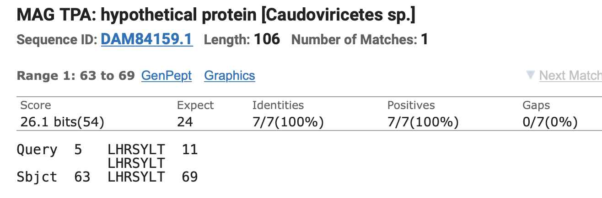
Pradhan's fourth insert consisted of QTNS followed by 11 aa with no match in SARS2 followed by PRRA, which was found in some random sequence of HIV in India. But if the designers of SARS2 were inspired to borrow the PRRA motif from HIV, how did they know to look at a random HIV sequence from India out of hundreds of thousands of possible options? Here the Indian sequence is compared to the HXB2 refseq, which contains QVTNS instead of QTNS, but which only matches 1 out of 4 aa of the PRRA:
$ curl 'https://eutils.ncbi.nlm.nih.gov/entrez/eutils/efetch.fcgi?db=protein&rettype=fasta&id=AKR75206,NP_057850'|mafft --clustalout -
[...]
AKR75206.1 RVLAEAMSQ-TNS-SILMQRSNFKGPRRAVKCFNCGREGHIAKNCRAPRKKGCWKCGKEG
NP_057850.1 RVLAEAMSQVTNSATIMMQRGNFRNQRKIVKCFNCGKEGHTARNCRAPRKKGCWKCGKEG
********* *** :*:***.**:. *: *******:*** *:*****************
^^^^^^^^^^^^^^^^^^^^^
Pradhan insert 4
[...]
This shows the colorized amino acid alignments:
# download whole genome sequences of sarbecoviruses
curl -sL sars2.net/f/sarbe.fa.xz|xz -dc>sarbe.fa
# efetch multi
emu()(curl -sd "id=$(paste -sd,)" "https://eutils.ncbi.nlm.nih.gov/entrez/eutils/efetch.fcgi?db=${1:-nuccore}&rettype=${2:-fasta}&retmode=$3")
# download spike protein sequences of sarbecoviruses and rename them to have same the defline as full sequences
seqkit seq -ni sarbe.fa|emu '' fasta_cds_aa|seqkit grep -nrp gene=S,spike,surface|sed 's/_prot_.*//;s/lcl|//'|seqkit fx2tab|awk -F\\t 'NR==FNR{a[$1]=$2;next}{print">"$1" "a[$1]"\n"$2}' <(seqkit seq -n sarbe.fa|sed $'s/ /\t/') ->spike.aa
# make a TSV matrix for percentage identity between spike protein sequences
aln()(\mafft --thread 3 --quiet "${@--}")
curl -Ls sars2.net/f/pid.cpp>pid.cpp;g++ pid.cpp -O3 -o pid
aln spike.aa|./pid>spike.pid
# thin out a TSV percentage identity matrix by removing rows with over 99% identity to any previous row
thin()(awk -F\\t 'NR>1{for(i=2;i<NR;i++)if($i>x)next;print$1}' x="${1-99}" "${@:2}")
# align text right by spaces
alir()(awk '{a[NR]=$0;if(length($0)>l)l=length($0)}END{for(i in a)printf"%"l"s\n",a[i]}' "$@")
# colorize amino acids
cola()(sed -f <(awk -F: '{print"s/"$1"/\033[38;2;0;0;0m\033[48;2;"$2";"$3";"$4"m"$1"\033[0m/g"}' <(printf %s\\n A:242:121:121 C:242:182:121 D:242:242:121 E:182:242:121 F:121:242:151 G:121:242:222 H:121:182:242 I:121:121:242 K:182:121:242 L:242:121:242 M:255:191:191 N:255:223:191 P:255:255:191 Q:223:255:191 R:191:255:207 S:191:255:244 T:191:223:255 V:191:191:255 W:223:191:255 Y:255:191:255 -:140:140:140)) "$@")
thin 92 <spike.pid|cut -d\ -f1|seqkit grep -f- spike.aa|seqkit grep -nrvp 'SARS coronavirus'|cat - <(seqkit grep -nrip hu-1,tor2,zc45,rp3\\b,rs7896,banal-20-52,ratg,lyra11,btsy2,shc014,wiv1\\b,gx_p2v,gx-p1e spike.aa)|seqkit rmdup -s|aln --reorder -|seqkit subseq -r267:298|cut -d, -f1|sed 's/ ORF.*//;s/ surface .*//;s/Severe acute respiratory syndrome/SARS/;s/Khosta-2 strain //;s/ isolate / /;s/ strain / /;s/Bat SARS-like coronavirus //;s/Betacoronavirus sp. //;s/ RNA$//'|seqkit fx2tab|(x=`cat`;cut -f1<<<"$x"|cut -d\ -f2-|alir|paste -d\ - <(cut -f2<<<"$x"|cola))
Arkmedic tried to do a BLAST search for the nucleotide sequence of Pradhan's first insert, but he used the coding sequence of the insert in SARS2 and not HIV. He searched for only viruses published in 2019 or earlier, so many of the top matches were sequences of HIV: [https://www.arkmedic.info/p/absolute-proof-the-gp-120-sequences]
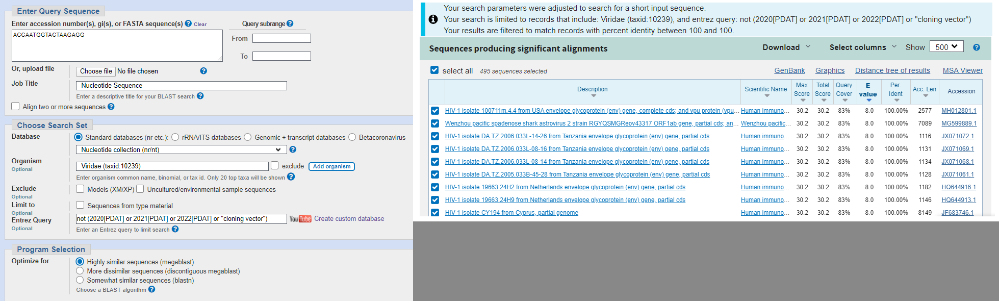
However his top matches got only 83% query coverage, because they only matched 15 out of 18 bases:
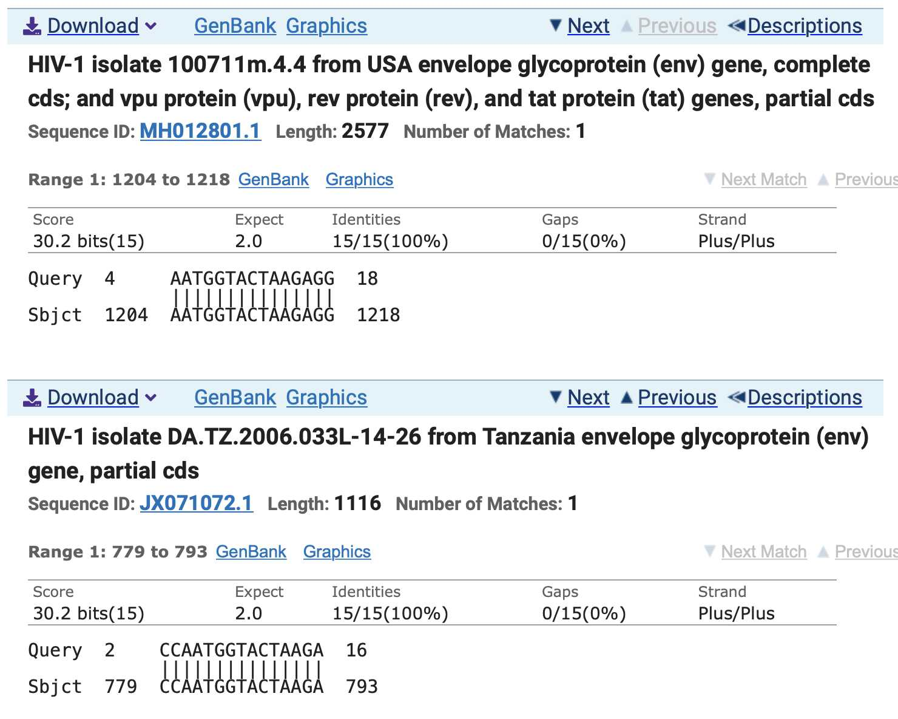
The first match above was missing the first 3 bases of the query and the second match was missing the first base, but both matches were still in frame so that the first match coded for 5 out of 6 aa of TNGTKR and the second match coded for 4 out of 6 aa:
$ emu protein fasta_cds_na<<<AVN55366|seqkit translate|seqkit subseq -r 400:409 >lcl|MH012801.1_cds_AVN55366.1_1 [gene=env] [protein=envelope glycoprotein] [protein_id=AVN55366.1] [location=1..2577] [gbkey=CDS] WENGTKRSNE $ emu '' fasta_cds_na<<<JX071072|seqkit translate|seqkit subseq -r 259:266 >lcl|JX071072.1_cds_AFV81607.1_1 [gene=env] [protein=envelope glycoprotein] [protein_id=AFV81607.1] [location=<1..>1116] [gbkey=CDS] NPNGTKIY
The main text of Pradhan's paper doesn't include the accession numbers of the HIV sequences which matched their inserts, but you have to dig them up from the supplementary Excel file which was only posted at bioRxiv but not ResearchGate: https://www.biorxiv.org/content/10.1101/2020.01.30.927871v1.supplementary-material?versioned=true. It shows that the first insert was matched by 10 different sequences from Thailand:
| country | accession | subtype | insert |
|---|---|---|---|
| Thailand | AFU28737.1 | CRF01_AE | Insert 1 |
| Thailand | AFU28711.1 | CRF01_AE | Insert 1 |
| Thailand | AFU28717.1 | CRF01_AE | Insert 1 |
| Thailand | AFU28733.1 | CRF01_AE | Insert 1 |
| Thailand | AFU28693.1 | CRF01_AE | Insert 1 |
| Thailand | AFU28721.1 | CRF01_AE | Insert 1 |
| Thailand | AFU28699.1 | CRF01_AE | Insert 1 |
| Thailand | AFU28729.1 | CRF01_AE | Insert 1 |
| Thailand | AFU28705.1 | CRF01_AE | Insert 1 |
| Thailand | AFU28725.1 | CRF01_AE | Insert 1 |
| Kenya | ALB06757.1 | G | Insert 2 |
| India | ACL98861.1 | C | Insert 3 |
| India | ACL98864.1 | C | Insert 3 |
| India | ACL98860.1 | C | Insert 3 |
| India | ACL98859.1 | C | Insert 3 |
| India | AKR75206.1 | C | Insert 4 |
However in all Thai sequences the first insert was coded by ACA AAT GGA ACC AAG AGG, so it's actually 3 bases different from the nucleotide sequence in Wuhan-Hu-1 that was used by Arkmedic (ACC AAT GGT ACT AAG AGG):
$ emu()(curl -sd "id=$(paste -sd,)" "https://eutils.ncbi.nlm.nih.gov/entrez/eutils/efetch.fcgi?db=${1:-nuccore}&rettype=${2:-fasta}&retmode=$3")
$ emu protein fasta_cds_na<<<AFU28737,AFU28711,AFU28717,AFU28733,AFU28693,AFU28721,AFU28699,AFU28729,AFU28705,AFU28725 >insert1.fa
$ seqkit translate insert1.fa|seqkit locate -p TNGTKR|sed 1d|cut -f1,5|while read l m;do seqkit grep -p $l insert1.fa|seqkit subseq -r $[m*3-2]:$[m*3-2+17];done|seqkit seq -s|sort -u|sed 's/.../& /g'
ACA AAT GGA ACC AAG AGG
There were about 3.2 million results at GenBank when I searched for 0:2019[dp] viruses[organism], but about 0.9 million or about 27% of the results were classified under HIV-1. [https://www.ncbi.nlm.nih.gov/nuccore/?term=0%3A2019%5Bdp%5D+viruses%5Borganism%5D] So the reason why many of Arkmedic's top hits at BLAST were sequences of HIV-1 might be because before 2020 HIV-1 was the species of virus with the most sequences at GenBank:
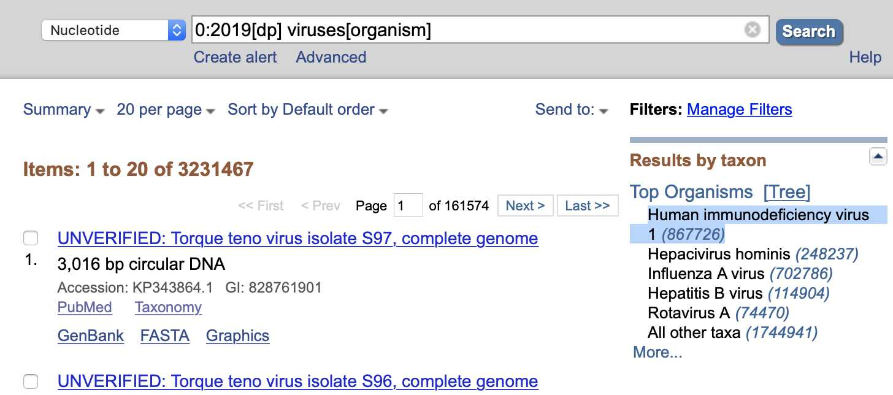
Arkmedic also wrote that he didn't find any 100% match when he searched for the nucleotide sequence of Pradhan's second insert on BLAST, but that's because he again used the nucleotide sequence in Wuhan-Hu-1 (CAC AAA AAC AAC AAA AGT), which is 3 bases different from Pradhan's HIV sequences:
$ emu protein fasta_cds_na<<<ALB06757 >insert2.fa $ x=$(seqkit translate insert2.fa|seqkit locate -p HKNNKS|sed 1d|cut -f5);seqkit subseq -r $[x*3-2]:$[(x+5)*3] insert2.fa|seqkit seq -s|sed 's/.../& /g' CAT AAA AAT AAT AAA AGT
When I did a BLAST search for the nucleotide sequence in HIV, it had 18/18 matching bases only with Pradhan's Kenyan HIV-1 sequence and with some other random virus where the match was on the minus strand (but in the screenshot below the other results with 100% identity and 100% query coverage were noncontiguous matches where the match was split into two different segments, as you can see from the max score being lower than on the first two rows):
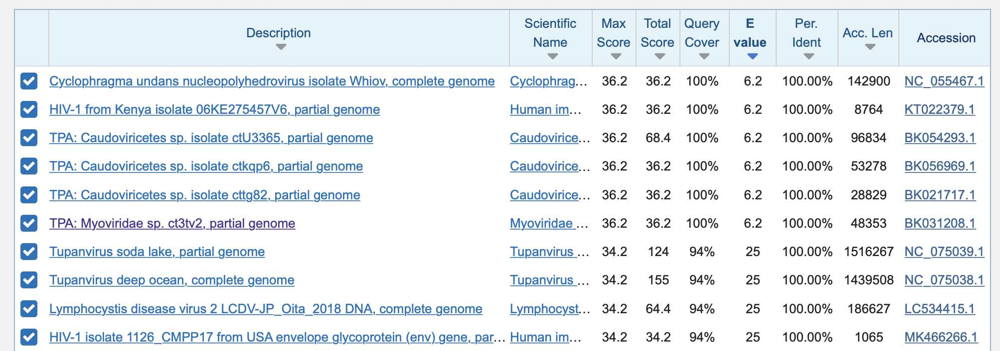
Arkmedic also pointed out that he found no matches for Pradhan's third insert on BLAST, but that's because he searched for the region around the insert in SARS2 and not HIV (RSYLTPGDSSSG and not RTYLFNETRGNSSSG). The nucleotide sequence of the version in HIV is found in all 4 HIV sequences that were listed in Pradhan's supplementary Excel file:
$ emu protein fasta_cds_na<<<ACL98861,ACL98864,ACL98860,ACL98859 >insert3.fa
$ x=RTYLFNETRGNSSSG;seqkit translate insert3.fa|seqkit locate -p $x|sed 1d|cut -f1,5|while read l m;do seqkit grep -p $l insert3.fa|seqkit subseq -r $[m*3-2]:$[(m+${#x})*3];done|seqkit seq -s|sort -u|sed 's/.../& /g'
AGG ACA TAC CTG TTT AAT GAG ACA AGA GGT AAT TCA AGC TCA GGT AAT
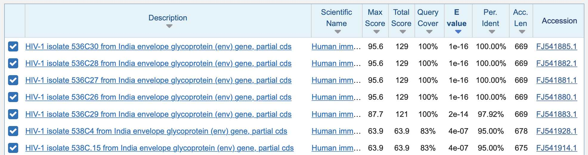
Arkmedic wrote: "TLDR: In order to get the 3 inserts of Gp-120 to exist in SARS-Cov-2, the genomic sequences that coded for them had to have got there by recombination from another organism or in a lab. Because they don't exist anywhere in nature it is not possible to have come from another organism."
However as I showed in the previous section, Pradhan's first insert actually looks like a deletion in SARS1 and not an insertion in SARS2. And Pradhan's second and third inserts were placed at the wrong spot because he only did a pairwise alignment of SARS1 and SARS2 and he didn't include more sarbecoviruses in his alignment.
And also the first two segments shown in Pradhan's table are only 6 aa long, so if you search for their nucleotide sequences in Wuhan-Hu-1 on BLAST, there's perfect matches in many other organisms but just not in other viruses, like for example this shows perfect matches for the second insert:
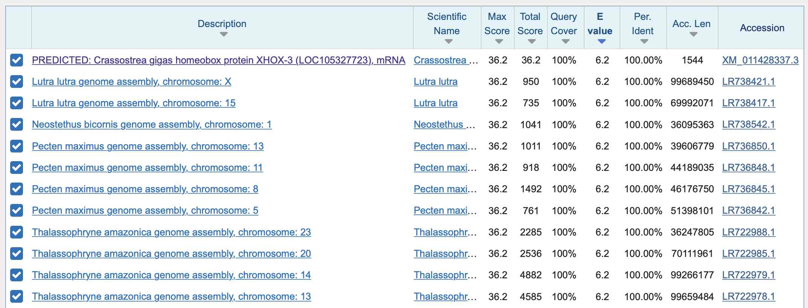
A Brazilian paper from 2021 said: [https://www.sciencedirect.com/science/article/pii/S0048969721012651]
Human sewage from Florianopolis (Santa Catarina, Brazil) was analyzed for severe acute respiratory syndrome coronavirus-2 (SARS-CoV2) from October 2019 until March 2020. Twenty five ml of sewage samples were clarified and viruses concentrated using a glycine buffer method coupled with polyethylene glycol precipitation, and viral RNA extracted using a commercial kit. SARS-CoV-2 RNA was detected by RT-qPCR using oligonucleotides targeting N1, S and two RdRp regions. The results of all positive samples were further confirmed by a different RT-qPCR system in an independent laboratory. S and RdRp amplicons were sequenced to confirm identity with SARS-CoV-2. Genome sequencing was performed using two strategies; a sequence-independent single-primer amplification (SISPA) approach, and by direct metagenomics using Illumina's NGS. SARS-CoV-2 RNA was detected on 27th November 2019 (5.49 ± 0.02 log10 SARS-CoV-2 genome copies (GC) L−1), detection being confirmed by an independent laboratory and genome sequencing analysis. The samples in the subsequent three events were positive by all RT-qPCR assays; these positive results were also confirmed by an independent laboratory. The average load was 5.83 ± 0.12 log10 SARS-CoV-2 GC L−1, ranging from 5.49 ± 0.02 log10 GC L−1 (27th November 2019) to 6.68 ± 0.02 log10 GC L−1 (4th March 2020). Our findings demonstrate that SARS-CoV-2 was likely circulating undetected in the community in Brazil since November 2019, earlier than the first reported case in the Americas (21st January 2020).
Guy Gadboit downloaded the raw reads from the paper and wrote a Twitter thread about them. [https://x.com/gadboit/status/1793281441322693002]
Gadboit said that he only got 7% coverage for SARS2 even though the paper said that they got 25% coverage. However I got about 15% coverage:
$ enad()(printf %s\\n "${@-$(cat)}"|while IFS= read x;do curl -s "https://www.ebi.ac.uk/ena/portal/api/filereport?accession=$x&result=read_run&fields=fastq_ftp"|sed 1d|cut -f2|tr \; \\n;done|sed s,^,ftp://,|xargs wget -q)
$ x=SRR13152144;enad $x
$ fastp -35 -i $x\_1.fastq.gz -I $x\_2.fastq.gz -o $x\_1.fq.gz -O $x\_2.fq.gz
$ minimap2 -a --sam-hit-only sars2.fa $x\_[12].fq.gz|samtools sort ->$x.bam
$ samtools coverage $x.bam|column -t
#rname startpos endpos numreads covbases coverage meandepth meanbaseq meanmapq
MN908947.3 1 29903 92 4348 14.5403 0.293649 36.7 43.5
Gadboit said that he didn't see any other lineage-defining locations except D614G (A23403G) and C8782. However I actually didn't get any read that covered the position of D614G regardless of whether I trimmed reads or not. I got two reads for 8782 and two reads for 28144, but they both had the lineage B allele:
$ samtools mpileup -f sars2.fa SRR13152144.bam 2>/dev/null|ruby -alne'next unless[8782,18060,28144,29095,23403].include?($F[1].to_i);next if$F[3]==0||$F[4]=="*";s=$F[4].upcase.gsub(/[.,]/,$F[2]).gsub(/\^./,"");s2=s.dup;s.enum_for(:scan,/[+-]\d+/).each{m=Regexp.last_match;m.begin(0).upto(m.end(0)+s[m.begin(0)+1,m.end(0)].to_i){|i|s2[i]=" "}};puts $F[1]+" "+$F[2]+" "+"ACGT".chars.map{|x|q=$F[5].chars.values_at(*s2.chars.each_index.select{|i|s2[i]==x}).map{|c|c.ord-33};q.size.to_s+(q.size==0?"":"["+"%.0f"%(q.sum*1.0/q.size)+"]")}*" "'|sed s/^/$x\ /|sort -n|(echo pos ref A C G T;cat)|column -t
pos ref A C G T
8782 C 0 2[34] 0 0
28144 T 0 0 0 2[38]
I got 4 different mutations with MAPQ over 10. The MAPQ was around 50 in each case, because each mutation was supported by two high-quality reads:
$ x=SRR13152144;samtools index $x.bam;bcftools mpileup -f sars2.fa $x.bam|bcftools call -mv|grep -v ^\#\#|cut -f-6|column -t #CHROM POS ID REF ALT QUAL MN908947.3 3392 . G C 3.22451 MN908947.3 5706 . A G 48.4146 MN908947.3 11437 . TAA TA 5.7555 MN908947.3 14408 . C T 48.4146 MN908947.3 14422 . C T 46.4146 MN908947.3 14895 . T G 47.4146
In a nearly complete set of GISAID submissions with a collection date in 2020, I didn't find any sample with all 4 mutations or even 3 out of 4 mutations, but the two earliest samples with 2 out of the 4 mutations were both from Santa Catarina in Brazil (which was the same state where the wastewater samples were collected):
$ curl -Ls sars2.net/f/gisaid2020.tsv.xz|xz -dc>gisaid2020.tsv
$ printf %s\\n A5706G C14408T C14422T T14895G|awk -F\\t 'NR==FNR{a[$0];next}{n=0;split($12,z,",");for(i in z)if(z[i] in a)n++;if(n>1)print n"\t"$0}' - gisaid2020.tsv|sort -k5|head -n5|tr \\t \|
2|EPI_ISL_541370|hCoV-19/Brazil/SC-FIOCRUZ-770/2020|2020-09-22|2020-03-12|B.1.1.33|Brazil|Santa Catarina|Braco do Norte|29739|Human|10|C241T,C3037T,A5706G,C14408T,A23403G,T27299C,G28881A,G28882A,G28883C,T29148C|||N:R203K,N:G204R,N:I292T,ORF1a:Y1814C,ORF1b:P314L,ORF6:I33T,S:D614G||20B|South America|0
2|EPI_ISL_476278|hCoV-19/Brazil/SC-L16-CD314/2020|2020-06-25|2020-03-24|B.1.1.33|Brazil|Santa Catarina||29782|Human|11|C241T,C3037T,A5706G,C14408T,G18803T,A23403G,T27299C,G28881A,G28882A,G28883C,T29148C|||N:R203K,N:G204R,N:I292T,ORF1a:Y1814C,ORF1b:P314L,ORF1b:S1779I,ORF6:I33T,S:D614G||20B|South America|0
2|EPI_ISL_470601|hCoV-19/Brazil/PA-0227/2020|2020-06-18|2020-04-01|B.1.1.33|Brazil|Para||29782|Human|11|C241T,C3037T,A5706G,C14408T,A23403G,T27299C,A28119T,G28881A,G28882A,G28883C,T29148C|||N:R203K,N:G204R,N:I292T,ORF1a:Y1814C,ORF1b:P314L,ORF6:I33T,ORF8:I76F,S:D614G||20B|South America|0
2|EPI_ISL_2959070|hCoV-19/USA/MI-MDHHS-SC26889/2020|2021-07-15|2020-04-02|B.1|USA|Michigan||29806|Human|9|C180T,C241T,C1059T,C3037T,C14408T,C14422T,A23403G,G25563T,G28314A|||N:R14H,ORF1a:T265I,ORF1b:P314L,ORF1b:P319S,ORF3a:Q57H,ORF9b:A11T,S:D614G||20A|North America|0
2|EPI_ISL_447105|hCoV-19/USA/MI-MDHHS-SC20308/2020|2020-05-16|2020-04-02|B.1|USA|Michigan||29806|Human|9|C180T,C241T,C1059T,C3037T,C14408T,C14422T,A23403G,G25563T,G28314A|||N:R14H,ORF1a:T265I,ORF1b:P314L,ORF1b:P319S,ORF3a:Q57H,ORF9b:A11T,S:D614G||20A|North America|0
The Brazilian samples from Santa Catarina belonged to the clade B.1.1.33. They had D614G and 3 out of the 4 other B.1 mutations (with G25563T missing).
This shows samples whose set of mutation is a subset of the Brazilian sample with the earliest collection date, so that it shows different possible ancestor strains of the Brazilian sample. The first column shows how many times each mutation set was found in each country, and the second column shows how many total mutations the mutation set has relative to Wuhan-Hu-1. The samples with 9 shared mutations are mostly from Brazil, even though there's also samples from USA, Chile, Canada, Portugal, Australia, Uruguay, and UK. However 7 out of 10 mutations are shared by the B.1.1 subclade, which is found in a huge number of countries all over the world:
$ printf %s\\n C241T C3037T A5706G C14408T A23403G T27299C G28881A G28882A G28883C T29148C|awk -F\\t 'NR==FNR{a[$0];next}{split($12,b,",");for(i in b)if(!(b[i]in a))next;o[$11 FS$6 FS$5 FS$12]++}END{for(i in o)print o[i]FS i}' - gisaid2020.tsv|sort -rnk2|head -n50|column -ts$'\t'
1 10 Brazil B.1.1.33 C241T,C3037T,A5706G,C14408T,A23403G,T27299C,G28881A,G28882A,G28883C,T29148C
9 9 Chile B.1.1.33 C241T,C3037T,C14408T,A23403G,T27299C,G28881A,G28882A,G28883C,T29148C
7 9 Canada B.1.1.33 C241T,C3037T,C14408T,A23403G,T27299C,G28881A,G28882A,G28883C,T29148C
5 9 Portugal B.1.1.33 C241T,C3037T,C14408T,A23403G,T27299C,G28881A,G28882A,G28883C,T29148C
2 9 Australia B.1.1.33 C241T,C3037T,C14408T,A23403G,T27299C,G28881A,G28882A,G28883C,T29148C
159 9 Brazil B.1.1.33 C241T,C3037T,C14408T,A23403G,T27299C,G28881A,G28882A,G28883C,T29148C
11 9 USA B.1.1.33 C241T,C3037T,C14408T,A23403G,T27299C,G28881A,G28882A,G28883C,T29148C
1 9 Uruguay B.1.1.33 C241T,C3037T,C14408T,A23403G,T27299C,G28881A,G28882A,G28883C,T29148C
1 9 United Kingdom B.1.1.33 C241T,C3037T,C14408T,A23403G,T27299C,G28881A,G28882A,G28883C,T29148C
1 9 Brazil Unassigned C241T,C3037T,C14408T,A23403G,T27299C,G28881A,G28882A,G28883C,T29148C
6 8 Switzerland B.1.1 C241T,C3037T,C14408T,A23403G,G28881A,G28882A,G28883C,T29148C
4 8 Brazil B.1.1.33 C241T,C14408T,A23403G,T27299C,G28881A,G28882A,G28883C,T29148C
3 8 Netherlands B.1.1 C241T,C3037T,C14408T,A23403G,G28881A,G28882A,G28883C,T29148C
3 8 Australia B.1.1.33 C3037T,C14408T,A23403G,T27299C,G28881A,G28882A,G28883C,T29148C
2 8 United Kingdom B.1.1.33 C241T,C3037T,C14408T,A23403G,G28881A,G28882A,G28883C,T29148C
2 8 United Kingdom B.1.1 C241T,C3037T,C14408T,A23403G,G28881A,G28882A,G28883C,T29148C
2 8 Czech Republic B.1.1 C241T,C3037T,C14408T,A23403G,G28881A,G28882A,G28883C,T29148C
2 8 Brazil B.1.1 C241T,C3037T,C14408T,A23403G,T27299C,G28881A,G28882A,G28883C
19 8 Brazil B.1.1.33 C3037T,C14408T,A23403G,T27299C,G28881A,G28882A,G28883C,T29148C
1 8 USA B.1.1.33 C241T,C3037T,C14408T,A23403G,G28881A,G28882A,G28883C,T29148C
1 8 USA B.1.1 C241T,C3037T,C14408T,A23403G,T27299C,G28881A,G28882A,G28883C
1 8 Italy B.1.1 C241T,C3037T,C14408T,A23403G,G28881A,G28882A,G28883C,T29148C
1 8 Brazil Unassigned C241T,C3037T,C14408T,T27299C,G28881A,G28882A,G28883C,T29148C
1 8 Brazil B.1.1.33 C241T,C3037T,C14408T,A23403G,T27299C,G28881A,G28882A,G28883C
1 8 Brazil B.1.1 C241T,C3037T,C14408T,A23403G,G28881A,G28882A,G28883C,T29148C
1 8 Australia B.1.1.33 C241T,C3037T,C14408T,A23403G,T27299C,G28881A,G28882A,G28883C
97 7 Russia B.1.1 C241T,C3037T,C14408T,A23403G,G28881A,G28882A,G28883C
92 7 Italy B.1.1 C241T,C3037T,C14408T,A23403G,G28881A,G28882A,G28883C
91 7 Spain B.1.1 C241T,C3037T,C14408T,A23403G,G28881A,G28882A,G28883C
9 7 Turkey B.1.1 C241T,C3037T,C14408T,A23403G,G28881A,G28882A,G28883C
9 7 Guam B.1.1 C241T,C3037T,C14408T,A23403G,G28881A,G28882A,G28883C
9 7 Chile B.1.1 C241T,C3037T,C14408T,A23403G,G28881A,G28882A,G28883C
8 7 United Arab Emirates B.1.1 C241T,C3037T,C14408T,A23403G,G28881A,G28882A,G28883C
8 7 Poland B.1.1 C241T,C3037T,C14408T,A23403G,G28881A,G28882A,G28883C
8 7 Finland B.1.1 C241T,C3037T,C14408T,A23403G,G28881A,G28882A,G28883C
76 7 Germany B.1.1 C241T,C3037T,C14408T,A23403G,G28881A,G28882A,G28883C
72 7 Australia B.1.1 C241T,C3037T,C14408T,A23403G,G28881A,G28882A,G28883C
7 7 Madagascar B.1.1 C241T,C3037T,C14408T,A23403G,G28881A,G28882A,G28883C
6 7 Peru B.1.1 C241T,C3037T,C14408T,A23403G,G28881A,G28882A,G28883C
6 7 Mexico B.1.1 C241T,C3037T,C14408T,A23403G,G28881A,G28882A,G28883C
6 7 Colombia B.1.1 C241T,C3037T,C14408T,A23403G,G28881A,G28882A,G28883C
6 7 Bangladesh B.1.1 C241T,C3037T,C14408T,A23403G,G28881A,G28882A,G28883C
56 7 Sweden B.1.1 C241T,C3037T,C14408T,A23403G,G28881A,G28882A,G28883C
53 7 France B.1.1 C241T,C3037T,C14408T,A23403G,G28881A,G28882A,G28883C
52 7 Canada B.1.1 C241T,C3037T,C14408T,A23403G,G28881A,G28882A,G28883C
50 7 Cyprus B.1.1 C241T,C3037T,C14408T,A23403G,G28881A,G28882A,G28883C
5 7 India B.1.1 C241T,C3037T,C14408T,A23403G,G28881A,G28882A,G28883C
5 7 Hungary B.1.1 C241T,C3037T,C14408T,A23403G,G28881A,G28882A,G28883C
5 7 Ecuador B.1.1 C241T,C3037T,C14408T,A23403G,G28881A,G28882A,G28883C
4 7 South Korea B.1.1 C241T,C3037T,C14408T,A23403G,G28881A,G28882A,G28883C
Out of the 5 nucleotide changes I got in the wastewater sample that was supposed to be from November 2019, only C14408T was part of the 7 mutations in B.1.1. The second mutation which matched the Brazilian samples on GISAID was A5706G, but the oldest samples with both two mutations are from Santa Catarina in Brazil:
$ grep A5706G gisaid2020.tsv|grep C14408T|sort -t$'\t' -k4|head -n4|tr \\t \| EPI_ISL_541370|hCoV-19/Brazil/SC-FIOCRUZ-770/2020|2020-09-22|2020-03-12|B.1.1.33|Brazil|Santa Catarina|Braco do Norte|29739|Human|10|C241T,C3037T,A5706G,C14408T,A23403G,T27299C,G28881A,G28882A,G28883C,T29148C|||N:R203K,N:G204R,N:I292T,ORF1a:Y1814C,ORF1b:P314L,ORF6:I33T,S:D614G||20B|South America|0 EPI_ISL_476278|hCoV-19/Brazil/SC-L16-CD314/2020|2020-06-25|2020-03-24|B.1.1.33|Brazil|Santa Catarina||29782|Human|11|C241T,C3037T,A5706G,C14408T,G18803T,A23403G,T27299C,G28881A,G28882A,G28883C,T29148C|||N:R203K,N:G204R,N:I292T,ORF1a:Y1814C,ORF1b:P314L,ORF1b:S1779I,ORF6:I33T,S:D614G||20B|South America|0 EPI_ISL_470601|hCoV-19/Brazil/PA-0227/2020|2020-06-18|2020-04-01|B.1.1.33|Brazil|Para||29782|Human|11|C241T,C3037T,A5706G,C14408T,A23403G,T27299C,A28119T,G28881A,G28882A,G28883C,T29148C|||N:R203K,N:G204R,N:I292T,ORF1a:Y1814C,ORF1b:P314L,ORF6:I33T,ORF8:I76F,S:D614G||20B|South America|0 EPI_ISL_525869|hCoV-19/USA/OR-OHSU-0648/2020|2020-09-01|2020-06-16|B.1.134|USA|Oregon|Multnomah County|29835|Human|9|C241T,C3037T,A5706G,C8818T,A12579G,C14408T,C15952T,G20980A,A23403G|||ORF1a:Y1814C,ORF1a:D4105G,ORF1b:P314L,ORF1b:D2505N,S:D614G||20A|North America|0
The Brazilian study also included a second SRA run, which was labeled "Sewage metratranscriptome from Florianopolis, SC, Brazil (Mar20)" (instead of Nov19 like the other run). [https://trace.ncbi.nlm.nih.gov/Traces?run=SRR13152143] It had only 3 mutations but none of them had MAPQ above 10:
$ enad()(printf %s\\n "${@-$(cat)}"|while IFS= read x;do curl -s "https://www.ebi.ac.uk/ena/portal/api/filereport?accession=$x&result=read_run&fields=fastq_ftp"|sed 1d|cut -f2|tr \; \\n;done|sed s,^,ftp://,|xargs wget -q)
$ x=SRR13152143;enad $x
$ fastp -35 -i $x\_1.fastq.gz -I $x\_2.fastq.gz -o $x\_1.fq.gz -O $x\_2.fq.gz
$ minimap2 -a --sam-hit-only sars2.fa $x\_[12].fastq.gz|samtools sort ->$x.bam
$ samtools index $x.bam;bcftools mpileup -f sars2.fa $x.bam|bcftools call -mv|grep -v ^\#\#|cut -f-6|column -t
#CHROM POS ID REF ALT QUAL
MN908947.3 6192 . C T 3.7766
MN908947.3 8145 . A G 9.88514
MN908947.3 8206 . A G 9.88514
However all three mutations were rare in the set of GISAID submissions with a collection date in 2020, and I didn't find any sample on GISAID which had even 2 out of the 3 mutations.
The March 2020 sample only got about 5% coverage for SARS2, and it didn't have any reads which covered WA1, lineage A0, or D614G positions:
$ samtools coverage SRR13152143.bam|column -t
#rname startpos endpos numreads covbases coverage meandepth meanbaseq meanmapq
MN908947.3 1 29903 23 1636 5.47102 0.0934689 37.4 57.8```
$ samtools mpileup -f sars2.fa SRR13152143.bam 2>/dev/null|ruby -alne'next unless[8782,18060,28144,29095,23403].include?($F[1].to_i);next if$F[3]==0||$F[4]=="*";s=$F[4].upcase.gsub(/[.,]/,$F[2]).gsub(/\^./,"");s2=s.dup;s.enum_for(:scan,/[+-]\d+/).each{m=Regexp.last_match;m.begin(0).upto(m.end(0)+s[m.begin(0)+1,m.end(0)].to_i){|i|s2[i]=" "}};puts $F[1]+" "+$F[2]+" "+"ACGT".chars.map{|x|q=$F[5].chars.values_at(*s2.chars.each_index.select{|i|s2[i]==x}).map{|c|c.ord-33};q.size.to_s+(q.size==0?"":"["+"%.0f"%(q.sum*1.0/q.size)+"]")}*" "'|sed s/^/$x\ /|sort -n|(echo pos ref A C G T;cat)|column -t
pos ref A C G T